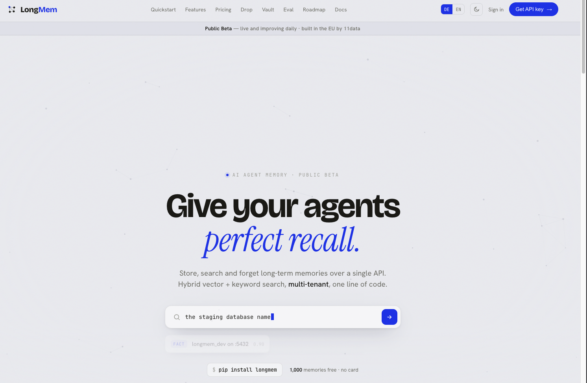
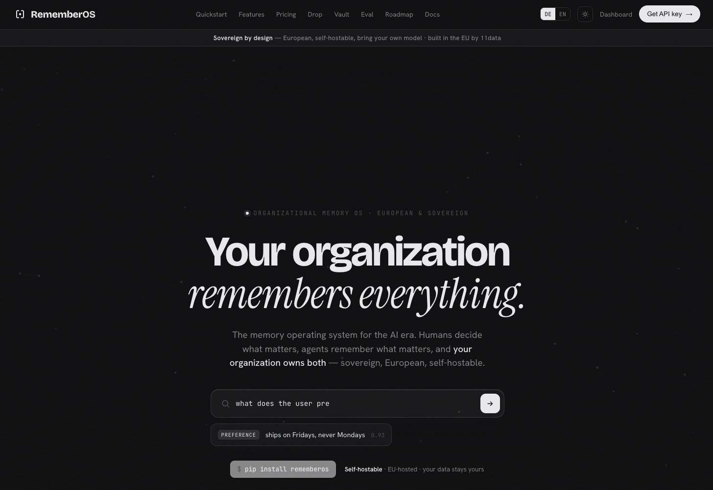
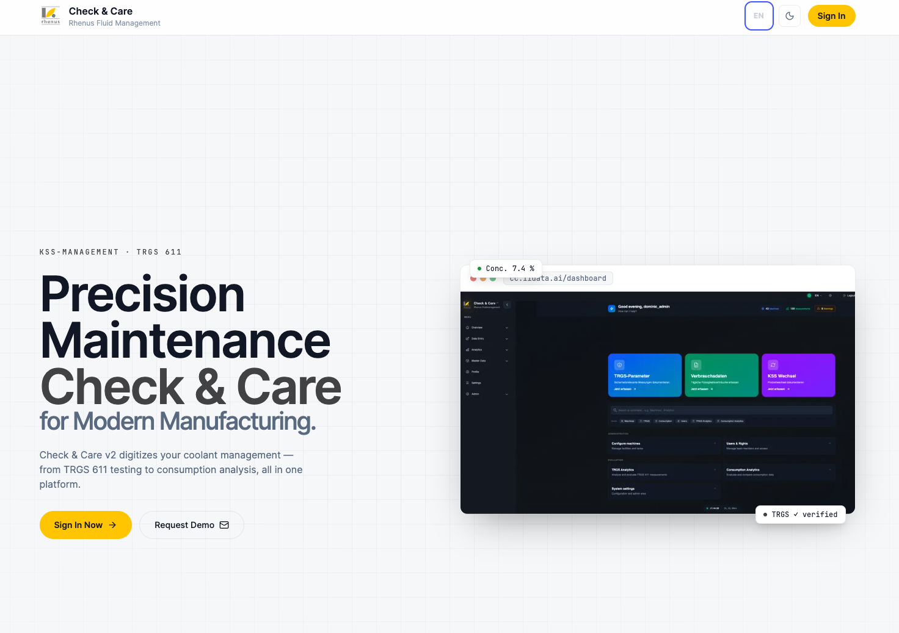
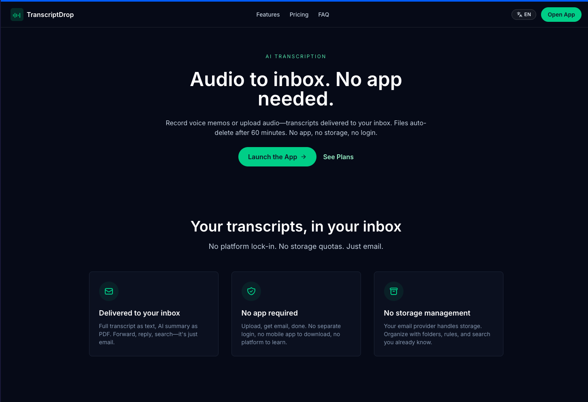

Jonathan Staude
Founder of 11data. I work on the layer that makes agents reliable in production — memory, tooling, and a documentation-first way of building.
Concepts were always the easy part. Building them wasn't — so I built the infrastructure to close that gap.

Give your agents perfect recall. Store, recall, and search long-term memories over a single API. Hybrid vector + keyword search, multi-tenant, MCP-native.

Organizational memory OS. Your organization remembers everything — sovereign, European, self-hostable. Humans decide what matters, agents remember it.

Precision maintenance platform for Rhenus Fluid Management. TRGS 611 compliance, KSS management, and consumption analytics — all in one platform.

Audio to inbox. Upload a voice memo — transcript + AI summary delivered to your email. Files auto-delete after 60 minutes. No app, no login, no storage.
Voice-first agent platform. Mobile PWA and Telegram in one shared session, with a natural-conversation voice pipeline, modular agent routing, and LongMem-backed memory. Self-building: a harness loop drives the agent autonomously.
GitHub →Documentation as the primary source of truth; reusable procedures as skills; a self-build loop that turns a coding agent into an autonomous developer. Less vibe-coding, more engineering.
I've been building community-driven, decentralized systems since before it was a category. In 2018 I led protchain, a decentralized cellphone-insurance concept presented at D1Conf in Prague.
The throughline hasn't changed: take a process everyone assumes needs a central operator, and work out how to make it reliable without one — whether that's risk in an insurance pool or memory across a fleet of agents.
I also bring on student interns and put their work out in the open — 11data_agent_research.